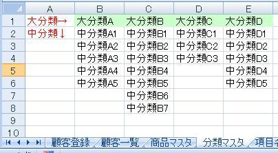
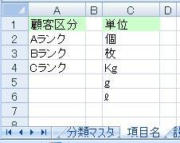

第17回.商品マスタを作成、２段階の可変リスト
エクセルで顧客管理を作ろう、
GW特別号が続いたので、そろそろ本題のソフト作成を進めましょう。
でも、技術解説していた方が楽しい気もしますが・・・
これからも時々、やることにします。
どうしても、ソフト作成の説明では、VBAそのものの解説がおろそかになってしまうので、
それを補完する形で、特集で技術解説をしようと思います。
ソフト作成は、売上の登録へ進んでいきます。
その前に、最低限必要な、商品マスタを作成します。
ここでは、２段階の可変リストを作ります。
このサイト内にある、
入力規則のリストを、２段階の絞り込みで作成1
さらにその前に、商品マスタで使用する、分類マスタを先に作りましょう。
以下のようなシートを作成して下さい、シート名は「分類マスタ」とします。

B2から横に、大分類名称を入れていきます。
大分類の2行目以下に、それぞれに含まれる中分類を入れます。
縦横とも可変で参照可能にしますので、件数はご自由にどうぞ！
続いて、シート「商品マスタ」を作成します。
ここまでは問題ないですよね。
では関数を入れていきます。
一息入れて
大分類の名前を定義します。
- シート「分類マスタ」を選択します。
- Ctrl+F3で名前定義を起動する。メニュー等からの起動はバージョン毎に違います。
- 「名前」に「大分類」と入力。
- 2007以降の場合、範囲は「ブック」、2003にはありません。
- 「参照範囲」に「=OFFSET(分類マスタ!$B$1,0,0,1,COUNTA(分類マスタ!$1:$1))」
- 「OK」
中分類の名前を定義します。
- シート「商品マスタ」のセルD4を選択します。選択セルが違うと正しく設定できません。
- Ctrl+F3で名前定義を起動する。メニュー等からの起動はバージョン毎に違います。
- 「名前」に「中分類」と入力。
- 2007以降の場合、範囲は「ブック」、2003にはありません。
- 「参照範囲」に「=OFFSET(分類マスタ!$B$2,0,MATCH(!$C4,大分類,0)-1,COUNTA(OFFSET(分類マスタ!$B:$B,0,MATCH(!$C4,大分類,0)-1))-1,1)」
- 「OK」
大分類の[入力規則]の[リスト]の設定です。
- シート「商品マスタ」のC4を選択
- [データ]-[入力規則]
- [設定]の[入力値の種類]で[リスト]を選択
- [元の値] に「大分類」と入力。F3を押すと名前定義の一覧から選択できます。
- 「OK」
中分類の[入力規則]の[リスト]の設定です。
- シート「商品マスタ」のD4を選択
- [データ]-[入力規則]
- [設定]の[入力値の種類]で[リスト]を選択
- [元の値] に「中分類」と入力。F3を押すと名前定義の一覧から選択できます。
- 「OK」
以上で２段階のリスト選択が完成です。
C4の大分類を入力選択すると、D4のリストにはその大分類に含まれる中分類だけが表示されます。
また、シート「分類マスタ」の大分類も中分類も追加・削除に自動対応されます。
説明が必要な部分は、
「=OFFSET(分類マスタ!$B$2,0,MATCH(!$C4,大分類,0)-1,COUNTA(OFFSET(分類マスタ!$B:$B,0,MATCH(!$C4,大分類,0)-1))-1,1)」
まず、OFFSETは、OFFSET(基準, 行数, 列数, 高さ,
幅)です。
基準のセルから指定の行数と列数だけシフトした位置にある、高さと幅のセル範囲を返す関数です。
また、MATCHは、MATCH(検査値, 検査範囲, 照合の型)です。
検査値が検査範囲の中で何番目にあるかを返す関数です。
その列数分ずれた中分類のリストを使用している事になります。
さらに、MATCH(!$A2,の!は間違いではありません、これが無いと正しく出来ません。
あえて指定するなら、商品マスタ!となりますが、汎用性を持たせ他のシートでも使えるようにしています。
ここでの、OFFSET、MATCH、COUNTAは使い道の広い組み合わせです。
覚えれば、いろいろな事ができるようになります。
もうちょっとです
続いて、単位のリストを作成します。
シート「項目名」に以下を追加して下さい。

C2以下はお好きなだけ入れられます、行数は可変に対応します。
もうこれは、大分類と同じですね。
単位の名前を定義します。
- シート「項目名」を選択します。
- Ctrl+F3で名前定義を起動する。メニュー等からの起動はバージョン毎に違います。
- 「名前」に「単位」と入力。
- 2007以降の場合、範囲は「ブック」、2003にはありません。
- 「参照範囲」に「=OFFSET(項目名!$C$2,0,0,COUNTA(項目名!$C:$C)-1,1)」
- 「OK」
単位の[入力規則]の[リスト]の設定です。
- シート「商品マスタ」のH4を選択
- [データ]-[入力規則]
- [設定]の[入力値の種類]で[リスト]を選択
- [元の値] に「単位」と入力。F3を押すと名前定義の一覧から選択できます。
- 「OK」
これで、関数の設定は全て終了しました。
シート「商品マスタ」の4行目を使用する行までコピーして下さい。
私は、とりあえず100行分を作成し、罫線を引きました。
今回は、関数とリストの設定だけでした。
このような関数の使い方は、「関数・超技関数 」をご覧下さい、いろいろ掲載しています。
関数は工夫次第で、かなりの事が可能です。
ただし、どうしても複雑になってしまいます。
内容によっては、VBAで処理した方が良い場合も多いです。
しかし、上記内容をVBAで全てやろうとしたら、かなり大変です。
関数と、VBAの使い分けが重要です。
豊富な関数が使える事がエクセルの最大の利点ですので、上手く活用しましょう。
同じテーマ「エクセル顧客管理」の記事
第14回.オブジェクトとプロパティの真実（GW特別号No1）
第15回.記述による処理速度の違い（GW特別号No2）
第16回.処理速度の向上はどこまでやれば良い（GW特別号No3）
第17回.商品マスタを作成、２段階の可変リスト
第18回.納品書を作成、顧客情報を取得(1)
第19回.納品書を作成、顧客情報を取得(2)
第20回.納品書を作成、顧客情報を取得(3)
第21回.イベント処理について
第22回.コントールについて
第23回.納品書を作成、商品情報を取得(1)
第24回.納品書を作成、商品情報を取得(2)
新着記事NEW ・・・新着記事一覧を見る
VBA100本ノック 100本目：WEBから100本ノックのリストを取得｜VBA練習問題（3月3日）
VBA100本ノック 99本目：自動席替え（行列と前後左右が全て違うように）｜VBA練習問題（3月2日）
VBA100本ノック 98本目：席替えルールが守られているか確認｜VBA練習問題（3月1日）
VBA100本ノック 97本目：Accessデータを取得（グループ集計）｜VBA練習問題（2月27日）
VBA100本ノック 96本目：Accessデータを取得（マスタ結合&抽出）｜VBA練習問題（2月26日）
VBA100本ノック 95本目：図形のテキストを検索するフォーム作成｜VBA練習問題（2月24日）
VBA100本ノック 94本目：表範囲からHTMLのtableタグを作成｜VBA練習問題（2月23日）
VBA100本ノック 93本目：複数ブックを連結して再分割｜VBA練習問題（2月22日）
VBA100本ノック 92本目：セルの色を16進で返す関数｜VBA練習問題（2月20日）
VBA100本ノック 91本目：時間計算（残業時間の月間合計）｜VBA練習問題（2月19日）
アクセスランキング ・・・ ランキング一覧を見る
1.最終行の取得（End,Rows.Count）｜VBA入門
2.RangeとCellsの使い方｜VBA入門
3.変数宣言のDimとデータ型｜VBA入門
4.マクロって何？VBAって何？｜VBA入門
5.Range以外の指定方法（Cells,Rows,Columns）｜VBA入門
6.セルのコピー&値の貼り付け（PasteSpecial）｜VBA入門
7.繰り返し処理（For Next)｜VBA入門
8.セルに文字を入れるとは（Range,Value）｜VBA入門
9.マクロはどこに書くの（VBEの起動）｜VBA入門
10.とにかく書いてみよう（Sub,End Sub）｜VBA入門
このサイトがお役に立ちましたら「シェア」「Bookmark」をお願いいたします。
記述には細心の注意をしたつもりですが、
間違いやご指摘がありましたら、「お問い合わせ」からお知らせいただけると幸いです。
掲載のVBAコードは動作を保証するものではなく、あくまでVBA学習のサンプルとして掲載しています。
掲載のVBAコードは自己責任でご使用ください。万一データ破損等の損害が発生しても責任は負いません。